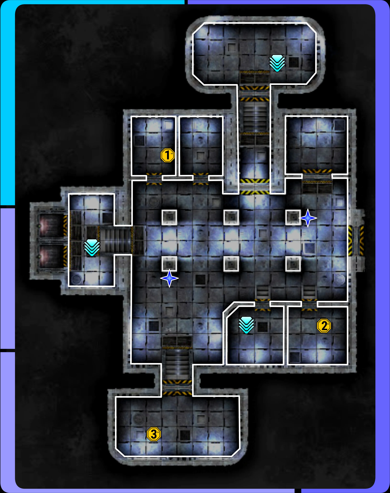
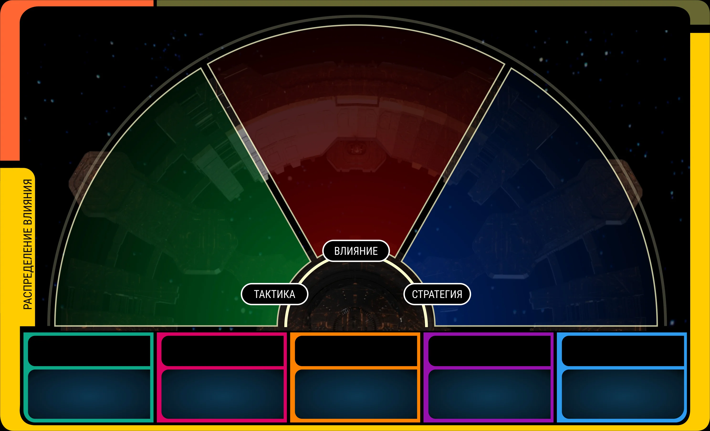
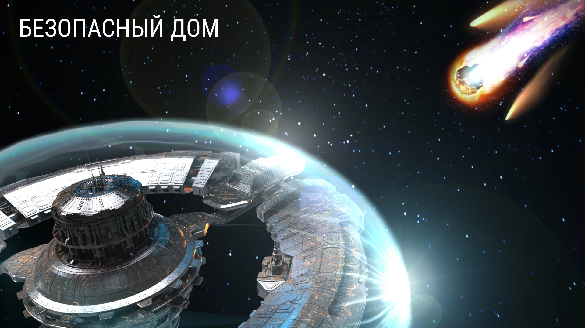
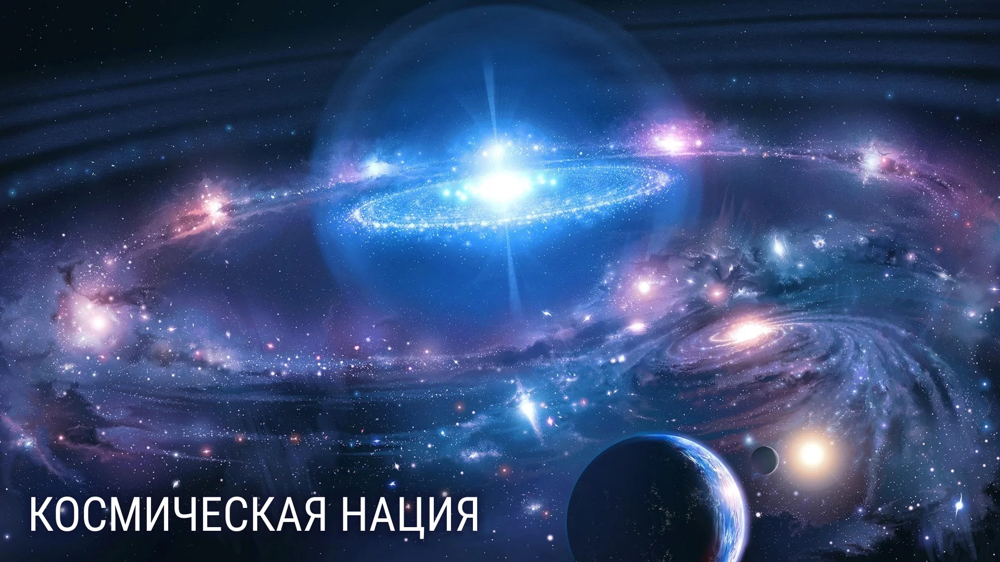
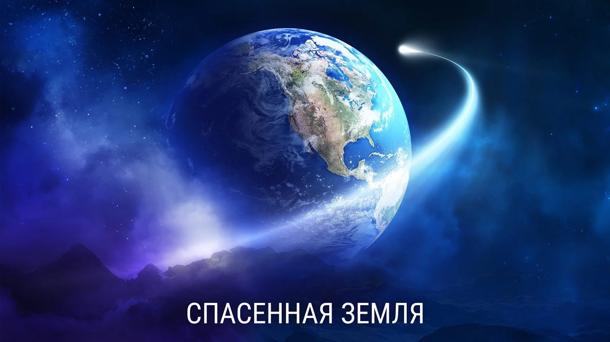

Союзники —
от барьеров к партнёрству
Allies —
from barriers to partnership
Полностью онлайн прикладная игра для РосБанка — 5 часов в Zoom и Miro. Кланы-команды восстанавливают орбитальную станцию, у каждой команды 5 ролей со своими мини-играми. Игра про то, как видеть в коллегах союзников, а не просто попутчиков. A fully online applied game for Rosbank — 5 hours in Zoom and Miro. Clan-teams restore an orbital station; each team has 5 roles with their own mini-games. The game is about seeing colleagues as allies, not just fellow travelers.
Что этоWhat it is
Тема — коммуникация между коллегами и подразделениями. Не «мы все работаем в одной компании» абстрактно, а конкретно: кто из коллег для меня союзник, а кто просто едет в одну сторону.
У каждого клана 5 ролей со своими мини-играми. Несколько ходов кланы накапливают ресурсы в соревновании друг с другом, а в финале сталкиваются с угрозой всей станции и должны сообща решить, в какое из четырёх возможных будущих вкладывать накопленное. Соревнование и совместное решение под давлением — две фазы, разница ощущается сразу.
The topic is communication — between colleagues and departments. Not "we all work for the same company" in the abstract, but specifically: which colleagues are my allies, and which are just sharing a ride?
Each clan has 5 roles, each with its own mini-game. For several turns the clans accumulate resources in competition with each other; in the finale they face a station-wide threat and have to jointly decide which of four possible futures to invest their accumulated resources into. Competition and joint decision-making under pressure — two phases, and the difference is immediate.
Что я сделалWhat I did
Геймдизайн всей онлайн-игры на 100+ участников одновременно. Главный челлендж — собрать связную игру для такого числа людей: чтобы механики сочетались с миром, были разнообразны, не перегружены, и работали на разных уровнях геймплея — стратегия у правителей, тактика у остальных ролей.
Отдельный приём — пара внутри каждой роли. Опытный игрок погружает «новичка» в правила и действия, на следующий ход новичок становится ведущим, к нему приходит следующий новичок. Так каждый получает более полный опыт игры, а не застревает в одной роли.
Полный визуальный дизайн всей игры — поля для каждой профессии, ресурсные таблицы, маркеры угроз, финальная фаза с выбором будущего станции.
Game design for the entire online game with 100+ simultaneous players. The main challenge was keeping it coherent at that scale: mechanics had to fit the world, be varied without overloading, and work at different gameplay layers — strategy for the rulers, tactics for the other roles.
A signature design choice — a pair inside every role. The experienced player walks the "rookie" through the rules and the actions; next turn the rookie becomes the lead, and a new rookie comes in. Every player gets a fuller view of the whole game instead of being stuck in one role.
Full visual design of the entire game — fields for each profession, resource tables, threat markers, the final future-of-the-station phase.
Компоненты и фото Components & photos









Danone · Future Supply Chain → Danone · Future Supply Chain →
Бизнес-симуляция цепочки поставок в космической метафоре. Графика и визуальный дизайн. Supply-chain business simulation in a space metaphor. Graphics and visual design.